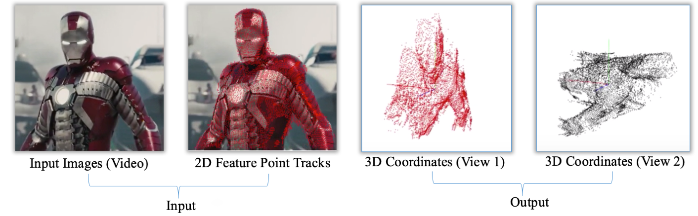
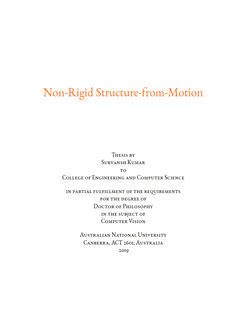
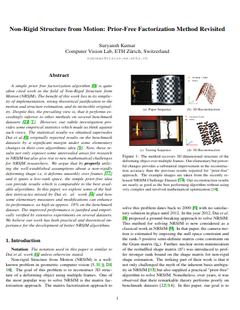
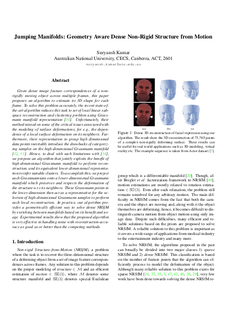
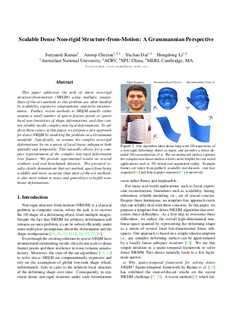
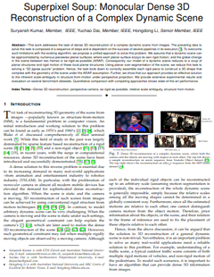
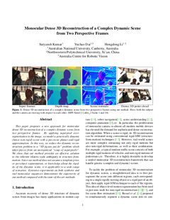
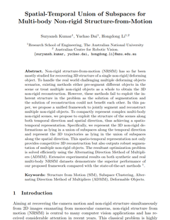
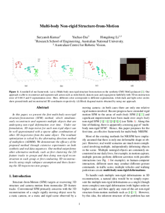
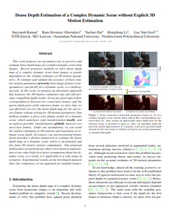

Non-Rigid Structure from Motion
| Suryansh Kumar1, 2 |
| 1ETH Zurich, | 2Australian National University |

Abstract
The problem of recovering non-rigid 3D shape and relative motion between camera and object from image feature correspondences is widely known as Non-Rigid Structure from Motion (NRSfM). It is a well-defined classical problem whose solution can assist several industrial applications such as virtual reality, medical surgery, movies etc. To date, there does not exist any algorithm that can solve NRSfM for all kinds of conceivable motion. As a result, additional constraints and assumptions are often employed to solve NRSfM. The task is challenging due to the inherent unconstrained nature of the problem itself as many 3D varying configurations can have similar image projections. The problem becomes even more challenging if the camera is moving along with the object. Our work takes on this challenging problem and proposes a few algorithms that have set a new performance benchmark to solve NRSfM. Our solutions not only discusses the classical work in NRSfM but also proposes some powerful elementary modifications to it. The foundation of our contribution surpass the traditional single object NRSFM and for the first time provides an effective formulation to realize multi-body NRSfM. Most techniques for NRSfM under factorization can only handle sparse feature correspondences. These sparse features are then used to construct the scene using organization of points, lines, planes or other elementary geometric primitive. Nevertheless, sparse representation of the scene provides an incomplete information about the scene. Our work goes from sparse NRSfM to dense NRSfM for a single object, and then slowly lifts the intuition to realize dense 3D reconstruction of the entire dynamic scene as a global as rigid as possible deformation problem. The core of this work goes beyond the traditional approach to deal with deformation. We show that relative scales for deforming objects under perspective projection can be recovered under some mild assumption about the scene. The work proposes a new approach for dense detailed 3D reconstruction of a complex dynamic scene from two perspective frames. Since the method does not need any depth information nor it assumes a template prior, or per-object segmentation, or knowledge about the rigidity of the dynamic scene, it is applicable to a wide range of scenarios.
Paper-Links
|  |  |  |  |  |  |  |  |  |
| Ph.D. Thesis | WACV'20 | CVPR'19 | CVPR'18 | TPAMI'19 | ICCV'17 | PR'17 | 3DV'16 | arXiv |
Advisors and Collaborators:
Yuchao Dai, Hongdong Li, Anoop CherianProject Accomplishment
- Recipient of Best Algorithm Award from Disney Research at NRSFM challenge CVPR 2017, Hawaii USA.
- Nominated for J.G Crawford Prize for Best Doctoral Thesis 2019, ANU Canberra.
- Recipient of HDR Merit Scholarship, funded in part by Australian Research Council.
- Recipient of Vice-Chancellor Grant for CVPR 2018 Conference, Salt Lake City, Utah USA.
Bibtex
@phdthesis{1885-164278,
author = {Kumar, Suryansh},
title = {Non-Rigid Structure from Motion},
school = {College of Engineering & Computer Science, The Australian National University},
year = {2019}
}
@inproceedings{Kumar_2020_WACV,
author={Kumar, Suryansh},
title={Non-Rigid Structure from Motion: Prior-Free Factorization Method Revisited},
booktitle={The IEEE Winter Conference on Applications of Computer Vision (WACV)},
pages={51-60},
month={March},
year={2020}
}
@inproceedings{kumar2019jumping,
title={Jumping manifolds: Geometry aware dense non-rigid structure from motion},
author={Kumar, Suryansh},
booktitle={Proceedings of the IEEE Conference on Computer Vision and Pattern Recognition},
pages={5346--5355},
year={2019}
}
@inproceedings{kumar2018scalable,
title={Scalable dense non-rigid structure-from-motion: A grassmannian perspective},
author={Kumar, Suryansh and Cherian, Anoop and Dai, Yuchao and Li, Hongdong},
booktitle={Proceedings of the IEEE Conference on Computer Vision and Pattern Recognition},
pages={254--263},
year={2018}
}
@article{kumar2019superpixelsoup,
author={Kumar, Suryansh and Dai, Yuchao and Li, Hongdong},
journal={IEEE Transactions on Pattern Analysis and Machine Intelligence},
title={Superpixel Soup: Monocular Dense 3D Reconstruction of a Complex Dynamic Scene},
doi={10.1109/TPAMI.2019.2955131},
year={2019}
}
@inproceedings{kumar2017monocular,
title={Monocular dense 3d reconstruction of a complex dynamic scene from two perspective frames},
author={Kumar, Suryansh and Dai, Yuchao and Li, Hongdong},
booktitle={Proceedings of the IEEE International Conference on Computer Vision},
pages={4649--4657},
year={2017}
}
@article{kumar2017spatio,
title={Spatio-temporal union of subspaces for multi-body non-rigid structure-from-motion},
author={Kumar, Suryansh and Dai, Yuchao and Li, Hongdong},
journal={Pattern Recognition},
volume={71},
pages={428--443},
year={2017},
publisher={Elsevier}
}
@inproceedings{kumar2016multi,
title={Multi-body non-rigid structure-from-motion},
author={Kumar, Suryansh and Dai, Yuchao and Li, Hongdong},
booktitle={2016 Fourth International Conference on 3D Vision (3DV)},
pages={148--156},
year={2016},
organization={IEEE}
}
@article{kumar2019dense,
title={Dense depth estimation of a complex dynamic scene without explicit 3d motion estimation},
author={Kumar, Suryansh and Ghorakavi, Ram Srivatsav and Dai, Yuchao and Li, Hongdong},
journal={arXiv preprint arXiv:1902.03791},
year={2019}
}